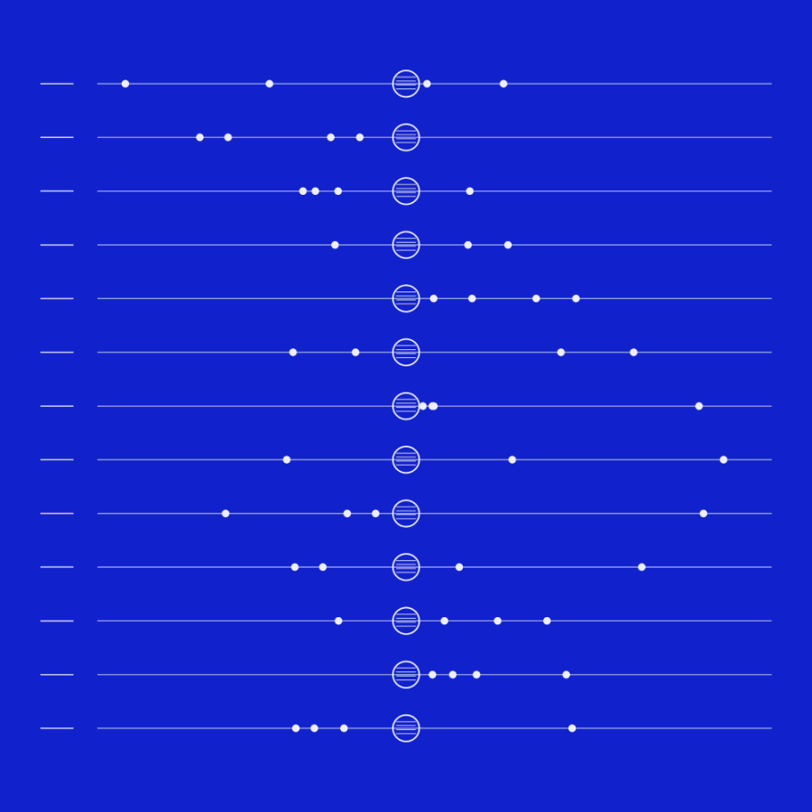
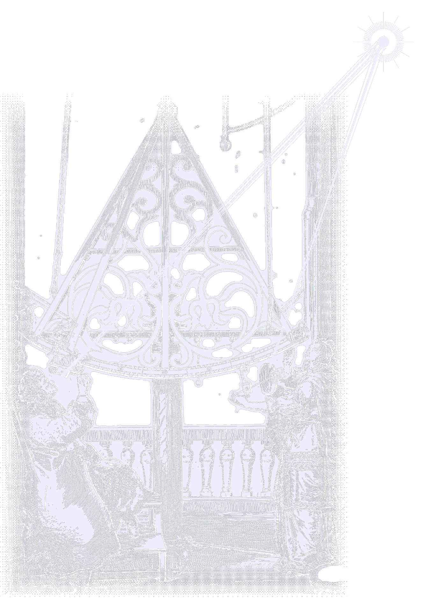
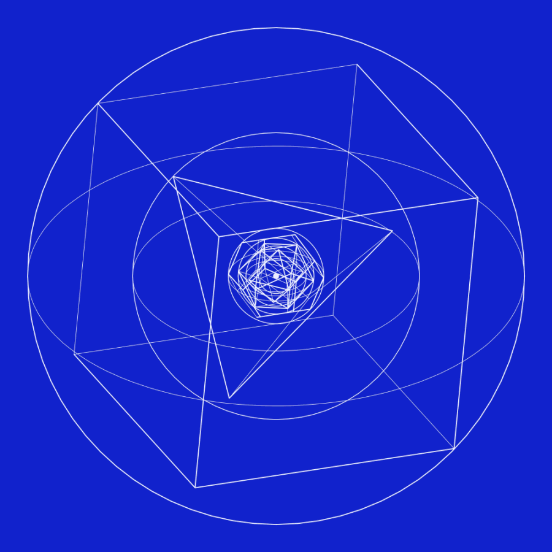
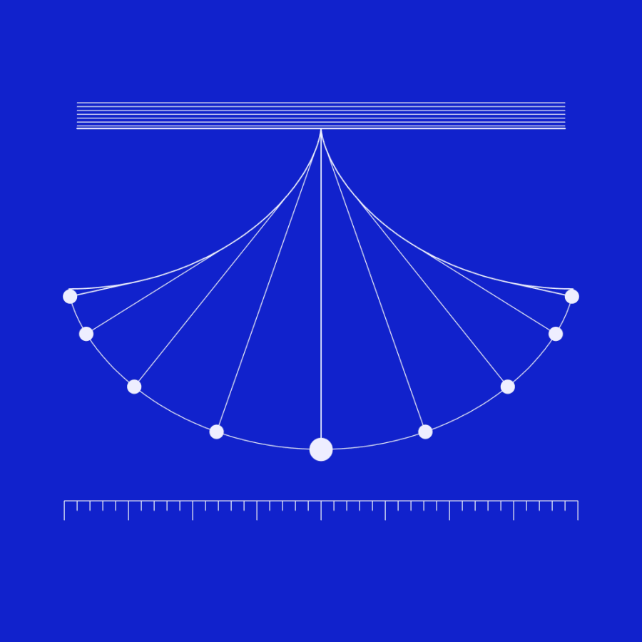
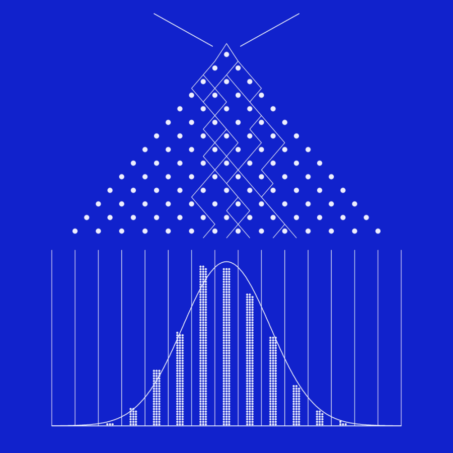
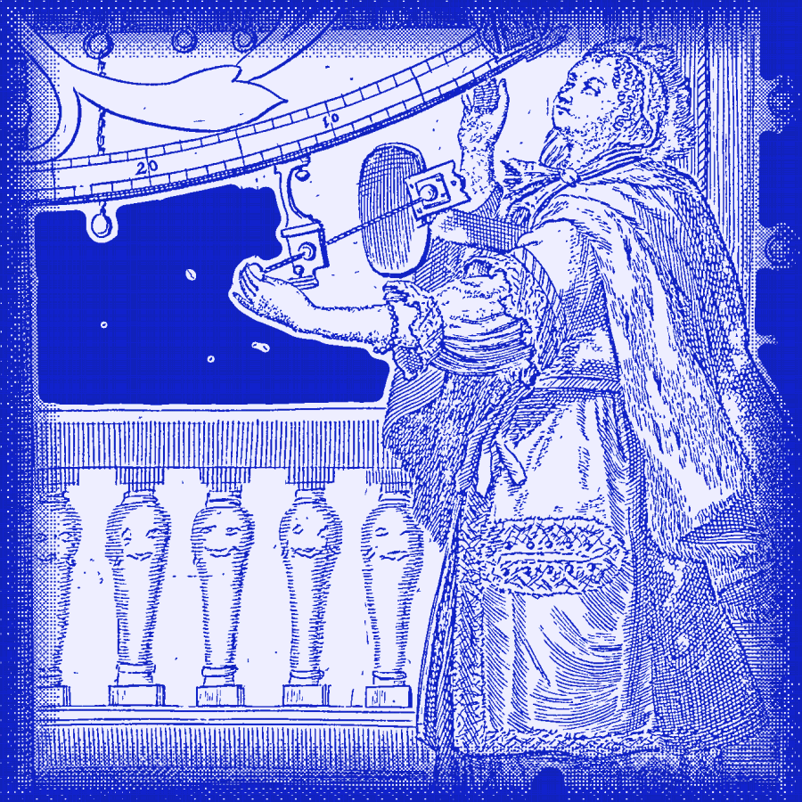
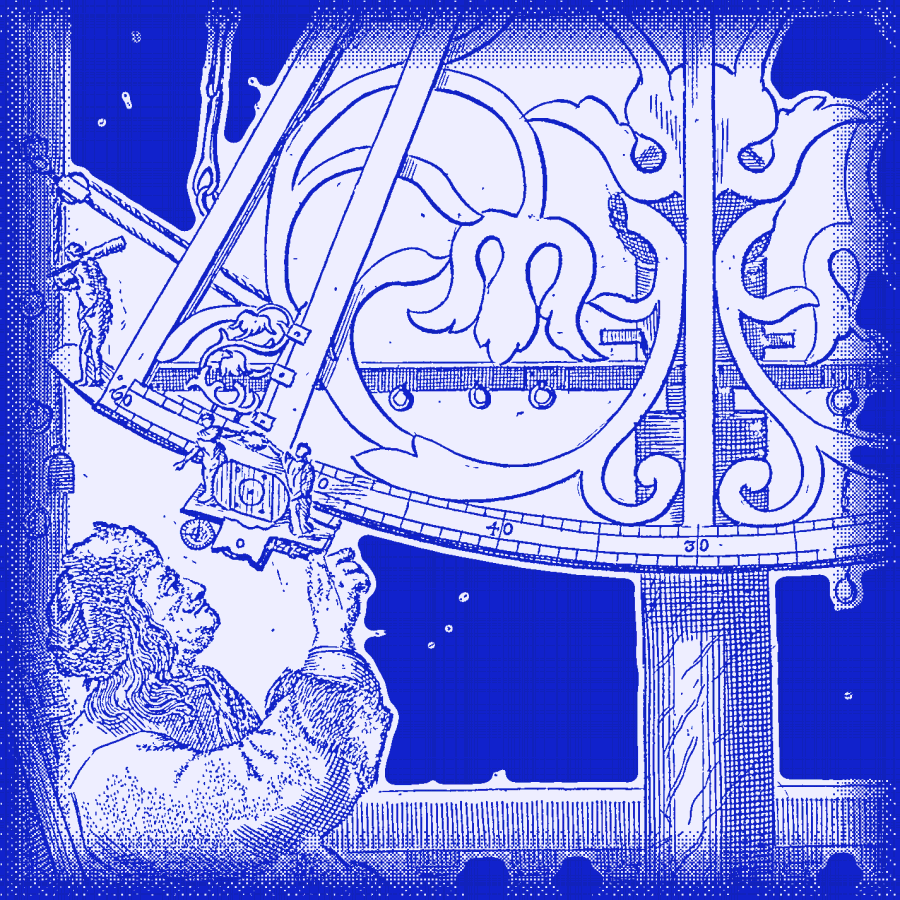
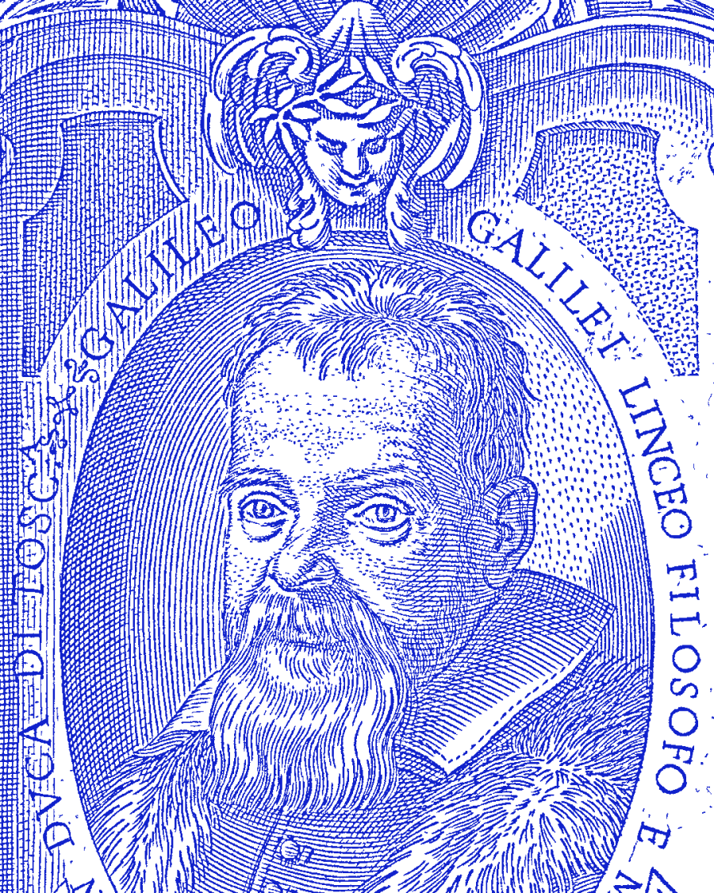

Observed before it is modelled
We start from data, the way Galileo started from four points of light beside Jupiter, recorded night after night.

Joveyra is a quantitative investment firm. Our researchers, most of them physicists and mathematicians, derive pricing models by hand. The models trade.

Every strategy at Joveyra exists twice: on paper, in the hand of the person who derived it, and in the model that trades it.
We start from data, the way Galileo started from four points of light beside Jupiter, recorded night after night.

Each pricing model begins as mathematics on paper: derived, argued over and proven before it becomes code.

Our pricing models place every trade, on time and without discretion, impulse or fatigue.

Positions are sized by what they can lose. Risk is measured continuously, every moment a market is open.

Data pipelines, research tools and execution systems are made in-house. We do not run what we cannot explain.

Nothing runs unobserved. Every model has an author, and every author answers for what the model does.

Built on the same principles that run our own capital, in English and Persian, for institutions and professional traders in the region.

Most of our researchers were first noticed at international olympiads in mathematics and physics. We hire for how people think, and we judge that by how they solve problems.
Io, Europa and Ganymede orbit Jupiter in 1.769, 3.551 and 7.155 days. Writing λ for each moon's mean longitude, show that λIo − 3λEuropa + 2λGanymede stays constant, and find its value.
Send your solution and a short note about yourself. We read every one.
Nothing on this website is an offer to sell, or a solicitation of an offer to buy, any security, fund interest or investment service. Images: Hevelius, Machinae coelestis (1673); Galileo, Sidereus nuncius (1610); Kepler, Mysterium cosmographicum (1596); Huygens, Horologium oscillatorium (1673); Villamena, portrait of Galileo (1623, The Met); astrolabe by Muhammad Zaman (1654, The Met). All public domain, redrawn by Joveyra.
© 2026 Joveyra